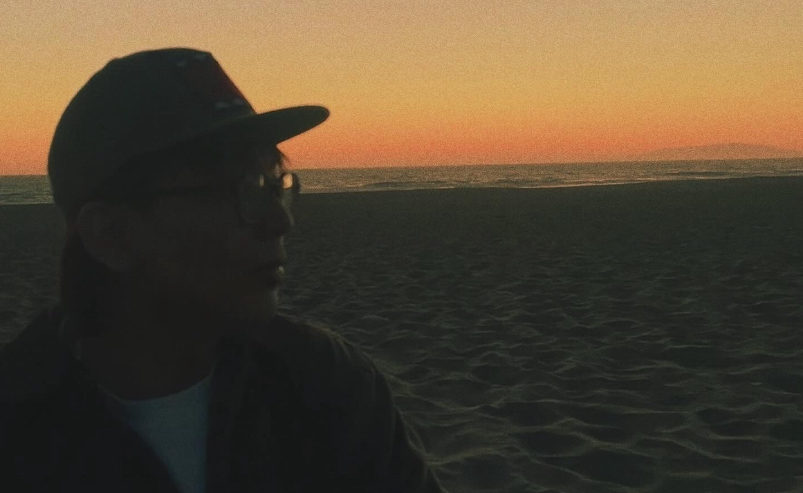
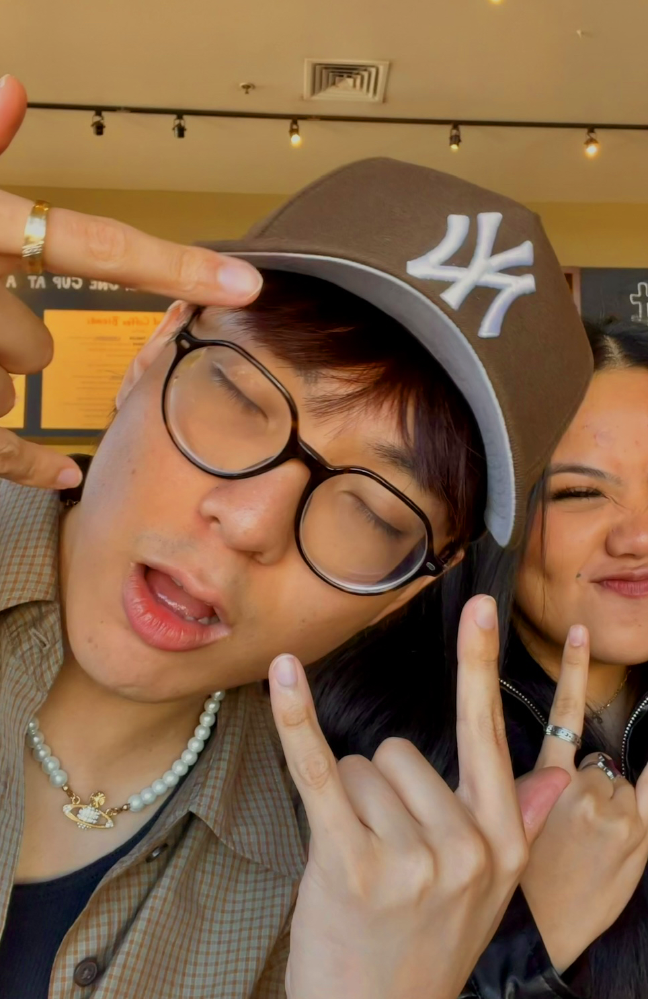
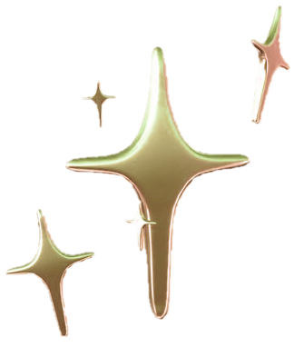

My name is Kacey Vicencio. I was born and raised in a Filipino household in Daly City, the city right below San Francisco. Hobbies and interests include fashion, collecting Hirono toys, digital illustration, and playing video games like Minecraft, Genshin Impact, and Pokemon. To pass the time, I also like watching a lot of OfflineTV videos on YouTube, studying up on how to speak Tagalog, and listening to indie, R&B, and alternative artists like Her's, Lamp, boy pablo, and The Internet. Currently, I am attending SFSU for a degree in Visual Communications and when I'm not at school, I work as a visual merchandiser in retail (those people who dress up the mannequins). I chose to study design at SFSU because I felt as if it is the only major that pertains to me; I think it felt interesting because it would involve projects that require me to think creatively.
  